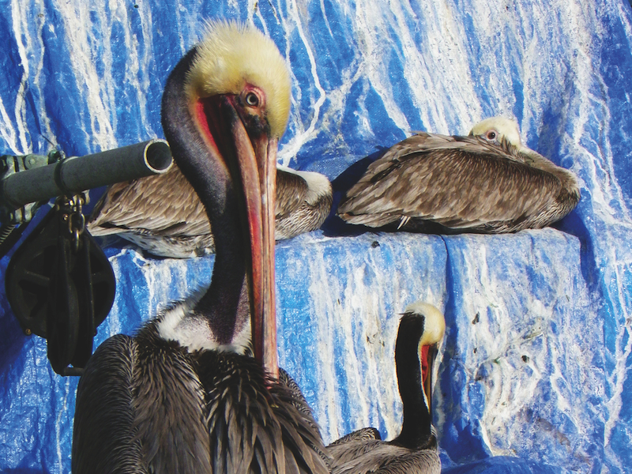
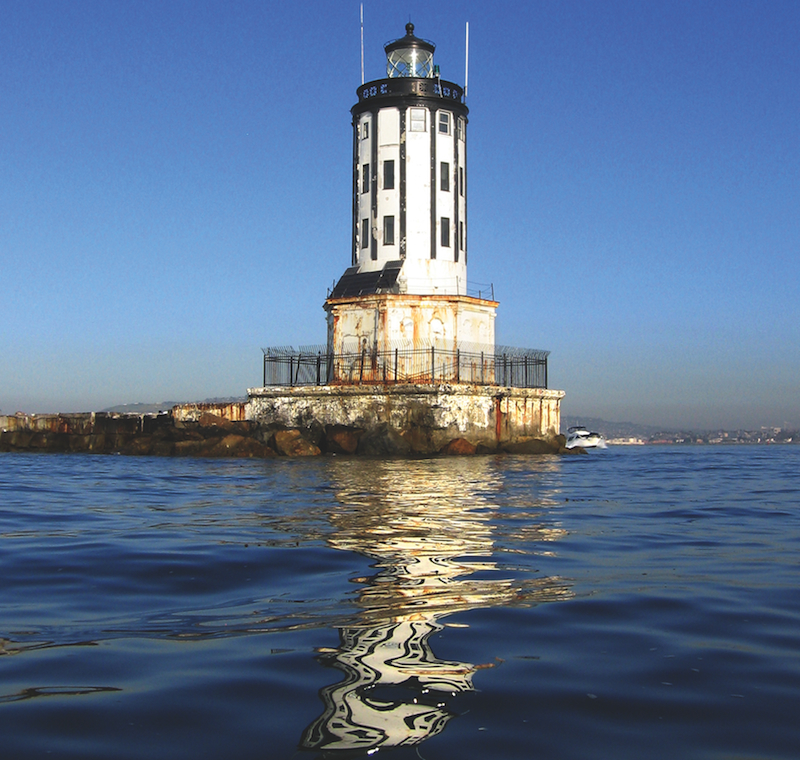

Photography Man: A conversation with Mike Watt
A man who almost needs no introduction, Mike Watt is one of the most iconic figures in punk rock. With his slick funk bass grooves and strong work ethic, Watt was greatly responsible for reshaping the eighties California punk scene as one of the founding members of the socially-conscious collective, The Minutemen. After the tragic death of his partner in crime and childhood friend D. Boon, Watt went on to form the equally seminal, though short lived fIREHOSE.
Known as one to never settle down, Watt has collaborated with a laundry list of artists throughout the years, some of the more notable ones being Porno for Pyros, J Mascis & the Fog, Banyan and, most recently, The Stooges, for which he’s been a part of for the past nine years. He’s also released a slew of solo work with his two main projects The Missingmen and the Secondmen, all the while releasing a trio of eminently ambitious “rock opera” concept albums under his own name.
The righteous bass player is so well known for his dexterous playing that, in a way, it’s almost impossible to describe him for doing anything but. The bass may be his raison d’être, his weapon of choice, but Watt has been quietly perfecting his craft with his other main hobby while touring all over the world: photography. Mike Watt: On & Off Bass collects a series of photographs that dwell on the sweeping nature and wildlife of his hometown of San Pedro. Watt found the time to talk to No Ripcord’s Juan Edgardo Rodríguez about how his hobby turned into a memoir, why he’s apprehensive about revisiting his journal entries and why pelicans are confident creatures.
When did you start to delve into photography as a life hobby?
A couple of things happened. Like these digital cameras came out, around '96 or something. It was about the same time that I bought a bicycle from a guy that had moved from Atlanta for about five bucks. I hadn’t ridden a bike in maybe 22 years. I got a car when I was sixteen and had bikes as a little kid. But that was it. I was an asshole. I mean, bikes are for any age. I remember seeing a lot of them in people’s cabs, it’s like clothes racks. So I thought, “I’m gonna learn; re-do this again.”
About the same time I started getting up early, but I also found it was a good time to ride the bike because there’s not many cars out. Not as many people see me fall down. So I started at the crack of dawn and thought to myself, “Wow, this whole world just opened”. San Pedro is in the harbor, so we have this trippy geography. So wow, seeing all this stuff that you don’t notice when you’re in a car. I thought, “I want to capture some of this, so I started taking pictures with this camera.”
I was born with bad knees, so it would get pretty sore. So to break it up every other day, I would get in the kayak because it’s only from the waist up. And suddenly, I’m starting to see shit out there, too. Dolphins and the pelicans. You know, you’re not in control. It just happens. I call them my gift. So yeah, I put a camera out there. I started my e-mail flowlist of friends and let them know, “Hey, here’s my town. Here’s me at the crack of dawn.”
So how did the project materialize? Were you approached with the idea out of the blue, or was it a project you’ve always wanted to expose?
There’s a gallery in Santa Monica called Track 16, and they asked me to do a show last year. After taking pictures for years. I used one for the cover of the second opera. So they printed them out, about 35 of them. I wasn’t so sure about this stuff. I’m more of a bass player. So I said, “Here they all are. Pick the ones you like.” So they picked these shots and there was a show. Two months later I was asked by this publisher in New York City and asked, ”Hey, would you make a book out of these?” The way it was catalogued at that show…at Track 16. But then they added some more, too. And I said, “Okay, you can pick more”. And then I was asked, “Why don’t we take some of your poems and diaries to juxtapose the pictures?” I have a lot of tour diaries. You know, I have to write this stuff to keep the focus. I don’t re-read it; it’s embarrassing. So the book is kind of collaboration between the people at Three Rooms Press and Track 16. I took and wrote all that. But they’re the ones who selected. Um, I don’t know what you call it, an editor or curator?
It falls somewhere between those lines.
So that’s how the book came about. I didn’t really solicit anybody. I was kinda solicited. But it’s trippy. When you have a solid thing like this, it’s like making a record. You think to yourself, “Hey, this can be here after I’m gone.” Like the noun version of the word 'work'? It’s the work. So I’m kind of into it. I never had children or family, so the records I make, and even this book, are like leaving something when I’m gone. And then there’s the fact that it’s based in Pedro.
Well, it is your town. And it’s interesting that you mention that because, in doing this, it becomes an exercise in modestly showing not only where you grew up in, but cementing its existence as well.
You might be right about it. I came here when I was ten, from Virginia. And I met D. Boon. All my music history is here. You don’t really see that it in the pictures but there’s that connection, too. Like this is where I met D. Boon. This is the place where I’m a Minuteman.
One recurring theme in many of these shots is how the landscapes always focus on those pivotal moments, like when the sun is rising.
Oh, that’s because Pedro faces east.
Right. It faces east into the harbor channel. There’s even one that, even looking at it from a computer screen, made me instantly squint because it was so intense.
That’s because it’s so bright. Powerful. To me it was this sense of power that I wanted to try to capture about that moment. There’s something about it, isn’t it. That light, right? I think it happens at sunset, too. About twenty minutes of this orange-yellow light that one doesn’t really get with the big fucking hills in the way. If you don’t have a marine layer, than that orange-yellow light is incredible. If you have a marine layer than there’s this grey thing, you know. And we got a lot of that, especially in the summer. They call it June Gloom. A lot of visitors, they trip out like, “Hey, I thought this was Southern California. But if you got mountains next to water than you get that stuff “.
Also, I can’t really set up the shots. I can just be ready. Like being out there, there’s a weird mix between this industry and this nature, and then there’s something about the morning. It’s like potential. I know the racket I make with the bass is all about late night. But I gotta tell you, I gotta stay up for gigs but I usually conk out early and wake up early. There’s just something I like about that time. But yeah, I like the idea of you being there, in a way. That’s what I do when I see them. I remember paddling, peddling there, they’re almost souvenirs, too. Huh, I never thought about that. I always saw them as gifts but I never thought of them as souvenirs.
Yeah, it’s interesting.
(At this moment, there’s a pause between the both of us, contemplating that last thought.)
Yeah, that’s interesting. Thanks for pointing that out. (laughs)
They are like souvenirs. Oh, but the book says it’s a memoir, a photographic memoir. I didn’t notice that. But I mean, it’s kinda like souvenirs because that’s what they do. When on tour, I take pictures. So when I look at that picture again, you can taste it again. It’s sort of that way with these shots.
Having a series of compiled quotes, which represent varied moments throughout your life in no real chronological order, I assume that looking back at all of them gives it a whole new meaning.
I wanted to have some kind of objectivity. Some of this stuff I’m so close to that it’s weird to get a perspective. I’ve never really done a photo show or photo book, so doing so would’ve made me come off as insincere. When the editors printed out my diaries, they said they had 1,500 pages.
That’s quite a lot.
Yeah, just imagine reading them. When you just pick out a sentence. I didn’t know what to pick without being too self-serving.
I was trying to think of other musicians who’ve published a photography book, and I couldn’t come up with any.
Before last year, in that photo show where they asked me about the book. I never thought of it, either. Believe me. I like to show my town and what I do, and how I’m spending my life in the mornings. But I’ve always thought of myself a little bit more as a bass player.
It’s your main trade.
And even that was weird, how that happened. It was just myself hanging out with my friend. And that was one of the ways we hung out – we’d play together. A lot of these things in my life – they’re trippy. I would say luck. I mean, I do work at ‘em, that’s for sure, but there’s gotta be some kind of luck involved, too. I think.
Coming from the listeners’ perspective, I guess the thing that separates it is that at least, with The Minutemen, they seem workmanlike in the sense that they’re so meticulous and composed, like it like you guys were bangin’ these songs in one or two days. They really sound intricate and complex.
Oh yeah, we did a lot of practice. I still do a lot of practice. Learning about John Coltrane’s life, that guy did like ten to twelve hours of practice a day. I’m a fan of that. Working at something, you know. But I can’t say that everything is in control. It seems like some things just come out of the blue. Like these shots, I can’t really tell where the sun will be or where that pelican will be. I have to be ready for when it happens… and capture it. And I like that in a way, you know? So when you’re composing a song like that it’s a different experience than being there when things are out of your control. You have to react in the moment. It’s a trip.
Speaking of which, how hard is it to take a picture of a pelican? In the photographs, they seem very cooperative.
For good reason. They’re kinda scared of humans. Somebody a couple of years ago was cutting their beaks off. You know what’s trippy about Pelicans – they don’t have a song. There are not a lot of birds that are quiet, and they only have a song as a baby. They grow up they lose their singing. They’re one of the few birds like that, and that’s always mystified me. Also, the way they’ll fly so close to the water without going in, without even flapping their wings. Such confidence.

You know what it is? In the old days, buying the camera was just the first installment, because then you had to develop the film. But with a digital camera, you just wail on it and you can delete all the lamers. You can get immediate feedback. It’s a whole different thing. You can take more chances, and maybe your odds of having something happen are a little better.
Where I was in my life, it just feels like some kind of coincidence. Like technology, where I was in my life, and the bicycle thing all came together to make this happen. And then the outside people like Three Rooms Press and Track 6. I can’t be all self-important and say I got it all together. I try to work and put a lot of effort into it, but it’s just like the forces coming together. You know the way life is, it’s just trippy like that.
I like to call that planned coincidences. You put yourself in a place and things just start to happen if you set them out to.
I think people don’t give that enough credit because they think everything is a conspiracy or some sort of scam. And I mean, there’s a lot of that stuff like, same ol' same ol' sleepwalking, connecting the dots, but life is actually a weird trippy mixture.
In capturing Pedro in its natural form, it seems like a lot of its surroundings and objects demonstrate a glimpse of a bygone industrial age. Especially in the way you captures a lot of machinery in its present day, whether its corroded container ships and rusting metal.
Well, that’s what happens if you know about salt water. I think Pedro is number three in the world after Singapore and Hong Kong, I think. It’s a big fucking port. It’s a weird thing, like Malibu has hammerhead cranes. In Pedro, there’s the cliff and all that stuff mixed in with this harbor and all this industry. It’s a weird marriage. But Pedro is a working man’s town. Most of the people here are longshoremen. They work on the docks.
My Secondmen band, they’re both longshoremen. So it is kind of the Pedro life that I’m trying to capture, because that’s what it is. I’m not trying to glorify it - machinery is just a part of the thing. It’s trippy how nature instills how you live it. All this industry, and then you see sea lions swimming in some of this crud. It breaks my heart. We actually have a hospital for them, as well as for oilbird. Man’s relationship with nature is a trippy thing. It really is.

So how much has San Pedro changed throughout the years?
I came here because my father was a sailor. At the time, Terminal Island was a Navy base when we fought in the Vietnam War. That’s all gone - it’s just a big container. My practice pad is still at Fort Macarthur, which was a former latrine for the officers. They closed it down and gave it to artists. I’ve kept the longest lease there, for about twenty-six years.
Pedro was a much rougher town. In the forties, I think we were the murder capital of the country. It was a rough, rough town. There are still rough parts and stuff, but not the notoriety it used to have. A lower reservation of the fort was torn up and turned into a marina, so people have their little boats. But when I came here, that was all an army base; that’s where I got my haircut for fifteen cents (laughs). Turtle Island was the navy base, and then here in Pedro was the army base, which is now mainly housing for engineers, military engineers.
It’s changed a lot in the eighties, of course. They still have the skinny little streets, so it’s stupid to have the density too high. Strip malls have been built in the north part of town, and we didn’t have those when I was a boy back in '67. You got a parking lot and these chain stores, and the nail shop and the yogurt shop. All that strip mall stuff, as if you live in Orange County or something. Put a little part of that in Pedro too, I suppose.
Oh, I know what you mean. Los Angeles has strip malls on every corner.
You see that stuff wherever you used to see open land. They went and did that like in Del Amo, in Torrence. There’s strip malls lined one after the other, but the down part of Pedro is kind of about the same. Although they did build some lots, but I don’t know if they’ve rented any. There are small changes to Pedro, but in some ways its kept its center. Being a container port is still better than a military. It’s not all bad news.
Naturally, with so many memories about Pedro, do you ever go back and revisit any of those journal entries? Since the book came out, did it make you think, “I just want to look back at some of those moments.”
Well I’ve looked at the ones they chose, but I didn’t re-read it. I told you, they’re embarrassing for me. But maybe I will one day, but I ain’t got the courage yet. I do have to say that it was trippy that they juxtaposed them with the pictures. That’s totally outside of me. I find them interesting, but they’re not me. They have their own ideas and sensitivity.
There’s a quote on the book I found particularly moving, about you taking a train out to Pinelawn Cemetery where John Coltrane was buried. According to the quote, you laid in his grave, and matched your entire body on his grave.
I did that when I turned forty, because that’s the year he died.
You know, I met so many interesting people in the early punk scene that had a huge influence on me. D Boon is probably my biggest influence because I knew him before I didn’t know about that kind of music. As a boy I knew about bebop, but nobody was talking about it at the time. The first time I heard Coltrane, I thought he was playing punk. I knew he was a little big older, but I didn’t know he was dead. The emotions seemed to me like what you heard in the, we’re talking about '77, '78, punk scene. And I’m like, “This is a different kind of way of playing punk”. I had no idea they would start taking me to gigs with some of these old guys like Elvin Jones, and to see them play live was really heavy for me as a kid. It just shows you the universality of music, and how it can transcend all kinds of stuff. How somebody like me, from Pedro, can actually like Coltrane says something about music. When I hear him I think, “There’s a guy who believes musicians are looking for some kind of truth". To me, that’s a noble reason to be in this racket.
When I was playing for Porno for Pyros, [Perry] Farrell once told me, “My goal is to keep the child’s eye of wonder”. I think what he meant was, don’t get jaded. Get excited about things just because they’re trippy and they got potential…like the early morning, and how it can become whatever. And see how the day does.
That sounds like the perfect way to end it. But I have to ask - this being your day off, are you going to take shots this morning?
Yeah, I already did.
27 June, 2012 - 21:57 — Juan Edgardo Rodriguez